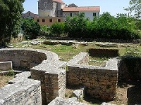

Gradska muzika je osnovana 1876.(kako je uklesano na spomen-ploči postavljenoj na zgradi gde je bilo prvo sedište). amatersko Gradsko pozorište osnivač je diletanske družine "Petar Hektorović", odnosno Kulturno-umetničkog društva (KUD) i amaterskog pozorišta Gradska biblioteka je osnivač "narodne hrvatske čitaonice starogradjanske" utemeljene 1874. Sedište Gradske knjižnice je u palači "Čitovnici" koju su podigli članovi dioničkog društva "Hrvatski dom" 1893. (kako je uklesano na spomen-ploči postavljenoj na istočno pročelje "Čitovnice") Faroski kantaduri je pevačko društvo osnovano 1995. s ciljem očuvanja i promoviranja, prvenstveno, sakralne kulturne baštine Staroga Grada Od gastronomske kulture, valja spomenuti starogruojske paprenjoke.